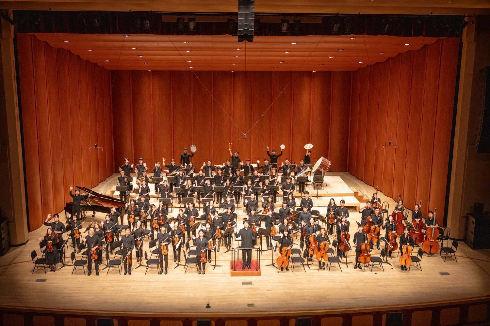
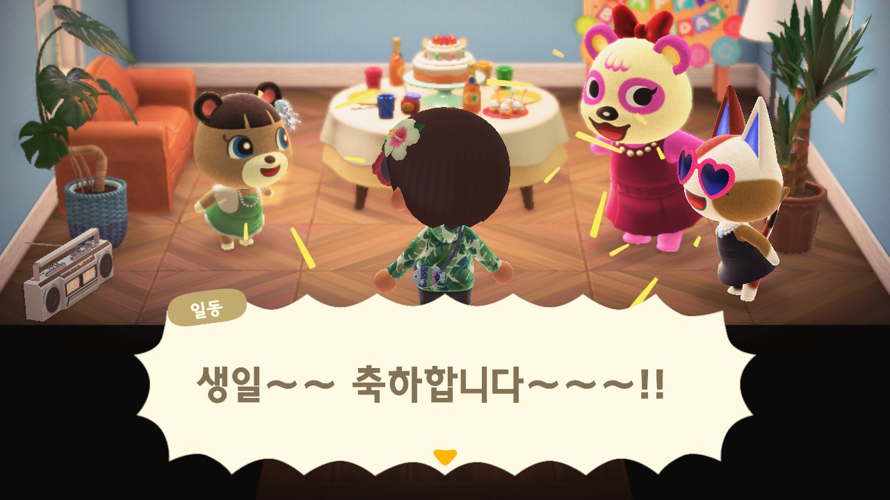

아마추어 오케스트라 콘브리오에서 트럼펫 불기
 대학교에 합격하고 난 이후 처음 트럼펫을 배우게 되었습니다. 세 달 정도 배우고 난 이후에 오케스트라 동아리에 호기롭게 지원했다가 떨어졌습니다. 너무 슬퍼 포기할까 했지만 오케스트라가 너무 멋있어 보여 1년간 열심히 갈고 닦아 겨우 턱걸이로 합격했습니다. 그 때 정말 기쁜 나머지 여기에 뼈를 묻겠다고 생각한 이후 생각지도 못한 연습량에 정말 뼈를 묻을지도 모른다는 공포감을 버티며 하루하루 지내고 있습니다. 연습을 할 때는 너무 힘들었지만 정기 연주회 당일 무대에 올라가 관객 앞에서 모든 단원들이 합을 맞춰 음악을 연주하는 것이 생각보다 굉장히 짜릿하더군요. 이 기억 덕분에 그 전의 고생을 잊고 다음 학기에도 다시 콘브리오를 하겠다고 다짐할 수 있다 생각합니다.
오케스트라 동아리에서 홍보부장 하기
콘브리오에 들어간 후 한 학기가 지나서, 그 전 학기 홍보부장님이 저에게 포토샵을 할 줄 아는지 물었습니다. 그냥 몇 번 만져본 정도라고 하니 대뜸 홍보부장을 해보는 것이 어떻냐 권유했고, 며칠 고심 끝에 왠지 재밌을 것 같아서 덥썩 승낙했습니다. 항상 일을 키우는 것은 저 자신이라는 것을 생각하지를 못하는 거 같습니다.
1년 전만 해도 오케스트라 동아리에 들어가서 디자인을 하고 있을 줄은 몰랐지만, 그것이 인생 아닐까요? 연주회 홍보를 위한 포스터, 팜플렛 뿐만 아니라 인스타그램에 부원 모집 카드 뉴스를 만들거나, 유튜브에 올릴 연주 영상 편집도 하기도 했습니다. 앙상블축제에서 동영상 촬영에 문제가 생겨 동영상 앞부분이 짤리는 바람에 급하게 연습시간에 녹음한 파일을 이리저리 매만져서 나름 한 곡이 되도록 만든 경험은 분명 오케스트라 동아리의 홍보부장이라 경험할 수 있었던 거겠죠?


취미로 프로그래밍 하기
컴퓨터와 저는 어릴 때 부터 가까운 사이로 지냈습니다. 제가 어줍짢은 실력이지만 포토샵을 만져본 경험이 있었던 이유도 그 때문이겠죠. 어릴 때부터 주먹구구식으로 막히면 인터넷에 검색해 결과물이 나오면 비록 엉성했지만 그렇게 좋을 수 없었습니다. 초등학교 6학년 때는 포토샵을 전문적으로 배워보고자 방과후 컴퓨터교실을 신청했지만 처음에는 PPT 자격증이 따기 쉽다며 1년동안 포토샵은 커녕 파워포인트만 만지작거리다 졸업했습니다. 지금 생각하면 그 때 빨리 반을 바꿨어야 했는데, 싶기도 하지만 이 때 다져진 타자실력이 지금까지 이어져 오고 있으니 나름 좋은 경험이었던 것 같습니다.
그렇게 컴퓨터 교육에서 멀어지나 했었는데, 정규 교육과정 덕택에 중학생 때는 스크래치를, 고등학생 때는 운이 좋게도 Python을 배울 수 있는 기회를 가지게 되었습니다. 프로그래밍 세계에 첫 발을 내딛은 겁니다! 스크래치로 처음 단어게임을 구현했을 때, 선생님에게 칭찬까지 받아 더더욱 기뻤던 기억이 남아있습니다. Python으로 심리테스트를 빙자한 바넘효과 테스트를 만들어 친구들에게 보여줄 때, 친구의 반응도 정말 재밌었습니다.
고등학생 때 이런 기억 덕분에 컴퓨터공학전공을 진지하게 고민했으나, 이미 어릴 때부터 배우고 싶었던 심리학이 훨씬 매력적이기도 하고, 프로그래밍은 이미 많은 사람이 잘하니 나까지 굳이 안 뛰어들어도 되지 않을까 하는 생각도 들어 컴퓨터공학전공을 포기했습니다.
하지만 운명의 장난일까요? 정보화 시대에 맞추어 대학에서는 소프트웨어 교육을 강화하여, 저는 입학하자마자 컴퓨터 프로그래밍 수업을 듣게 되었습니다! 대학에서 접한 프로그래밍의 세계는 고등학교 정보 시간에 잠깐 배운 것보다 훨씬 방대했습니다. 항상 얕게 깔짝대었던 프로그래밍을 더 배우고 싶다는 생각에 컴퓨터공학 부전공을 무작정 신청했습니다. 어렵고 힘들다는 소문이 자자한 수업을 내가 할 수 있을까? 라는 고민도 들긴 했지만, 재미를 위해서 학점은 어느정도 희생해도 괜찮지 않을까 하는 위험한 생각으로 저질러버렸습니다. 두근두근!
독서하는 삶
여러분 박완서, 은희경, 구병모, 정세랑 작가님은 천재가 아닐까요? 앤드류 솔로몬과 올리버 색스는 심리학 책을 쓰는데 어떻게 문학같은 문장을 쓸 수 있을까요? 그리고 왜 독서는 항상 시험기간만 되면 더 재밌어질까요? 독서는 하면 할 수록 더 많은 질문이 생기는 활동인 것 같습니다.
요즘에는 종이책만 고집하지 않고 아이패드를 이용해 전자책도 사 읽고 있습니다. 가볍게 여러 권을 들고다닐 수 있고, 또 집에서 터치 몇 번으로 바로 사서 읽을 수 있는 것이 큰 장점인 듯 합니다.
사실 많은 이들의 취미는 게임이잖아요?
 어렸을 때 정말 재미있게 했던 놀러와요 동물의 숲의 기억이 저를 모여봐요 동물의 숲으로 이끌었습니다. 사이버 주민들과 함께 우정을 나누는 삶이 얼마나 행복한지 아시나요? 특히 타마라는 친구가 귀엽답니다. 제 생일이 되자 귀여운 주민들이 생일파티를 열어주어서, 더욱 행복한 생일을 보낼 수 있게 되었습니다. 물론 친구가 사이버 친구만 있는 것은 아닙니다. 그렇지만 사이버 친구들이 제일 귀여운 건 맞는 듯 합니다.